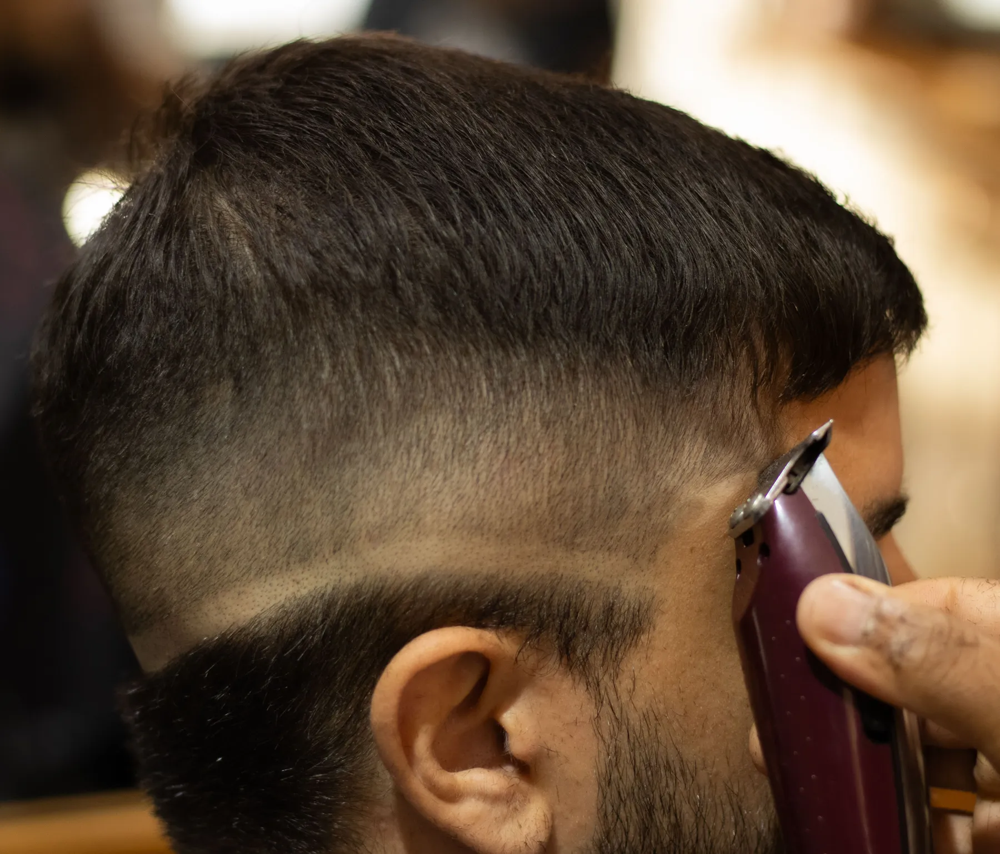
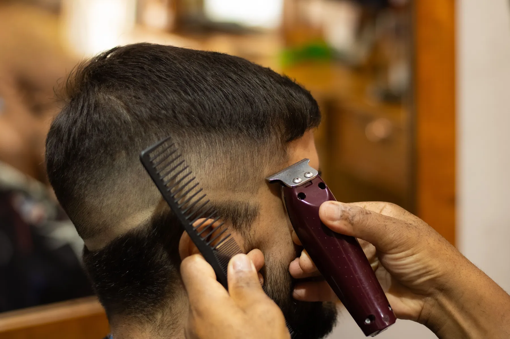
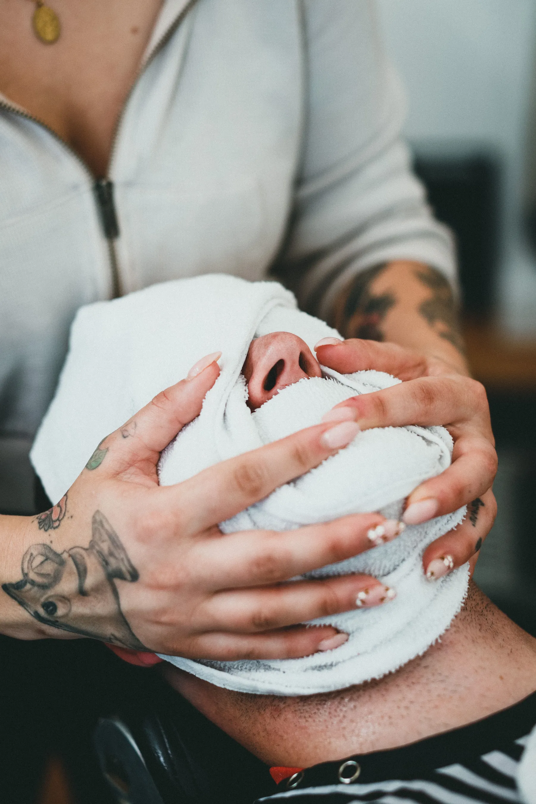
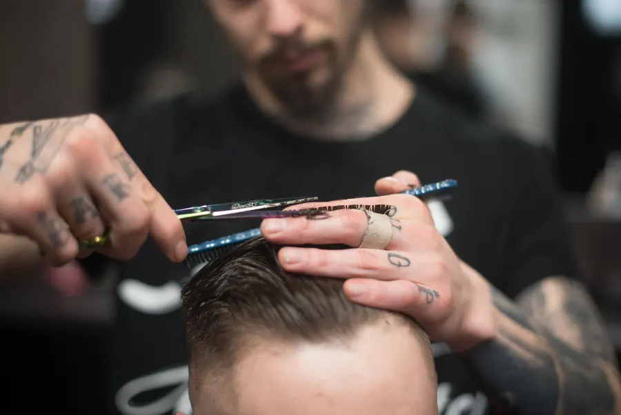
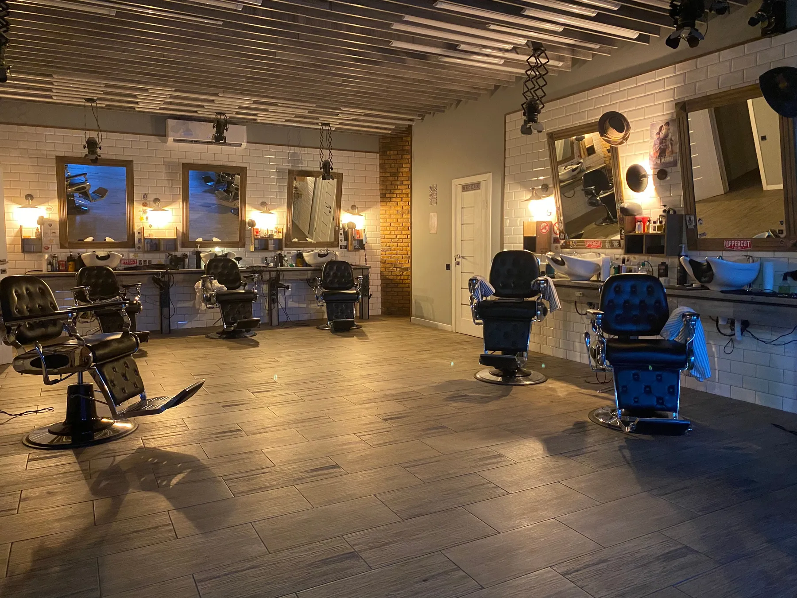
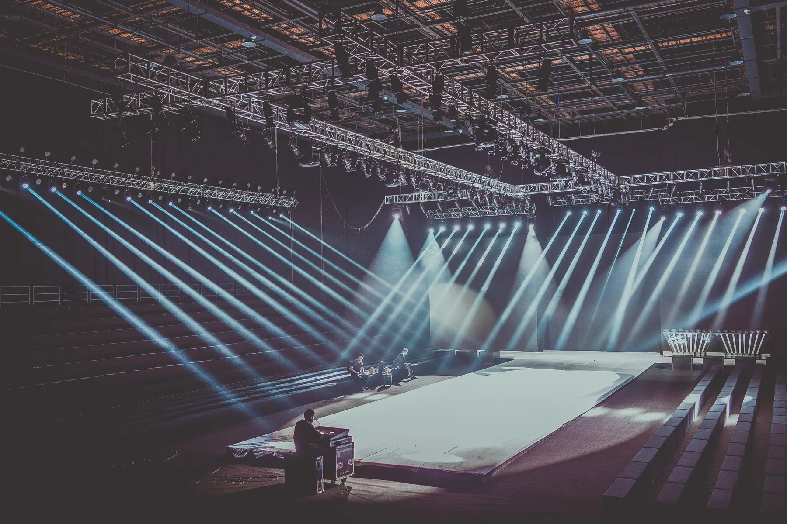
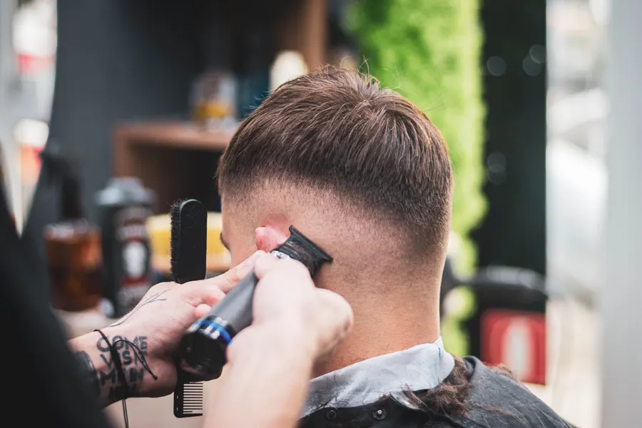
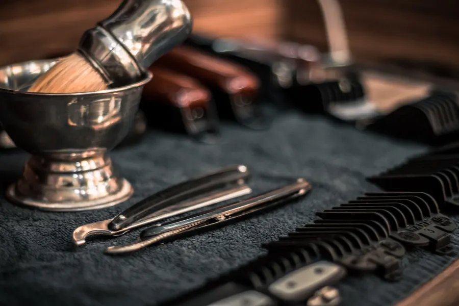

01
01Fade
Geçişler; makine ve ustura işçiliği.

Fade, sanatsal kesim, cilt bakımı ve manikür. Sahnede görülen el, koltukta yalnızca randevuyla. İstediğinizi anlatın, stil kartınız yazılsın.
Geçişin yüksekliği, desenin çizgisi, usturanın son dokunuşu. Sahnede de salonda da aynı el, aynı özen.


Bu bölümde fade işçiliğiniz anlatılır: hangi makine, hangi tarak, ne kadar sürer. Ayrıntıyı sizden alırız; uydurma bir cümle yazmayız.

Cilt bakımı ve manikür, kesimin yanında aynı koltukta. Salonunuzda çekilecek birkaç kare bu bölümü sizin yapar; çekimi birlikte planlarız.
Başlıklar Instagram'daki öne çıkanlarınızdan. Yayında her kartın ardında kendi çalışmalarınız ve hizmet süresi durur.
01Geçişler; makine ve ustura işçiliği.

02Desenler ve imza işler.
 03
03Kesimin yanında bakım.
Erkek el bakımı.

Sıra yok.
Koltuk sizin saatinizde hazır.

Instagram'da paylaştığınız sahne, festival ve basın işleri; Google'dan gelen yeni müşteri de görsün. Yayında her durak kendi fotoğraf ve videolarıyla açılır.






Yeni müşteri önce Google'a bakar. Sitede uydurma puan ya da yorum göstermeyiz; memnun müşteriyi doğrudan Google sayfanıza yönlendiririz.